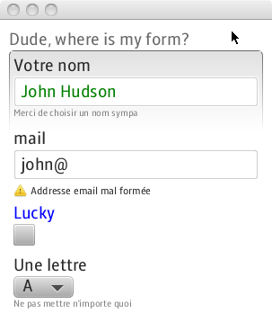

FXForm2 is a library providing automatic JavaFX 2.0 form generation.
How does it work?
Node fxForm = new FXForm(myBean); // create the FXForm for your bean [...] root.getChildren.add(fxForm); // add it to your scene graph
That's it!
Main features include:
LGPL
Antoine Mischler (antoine@dooapp.com)
You can download this project in either zip or tar formats.
You can also clone the project with Git by running:
$ git clone git://github.com/amischler/FXForm2